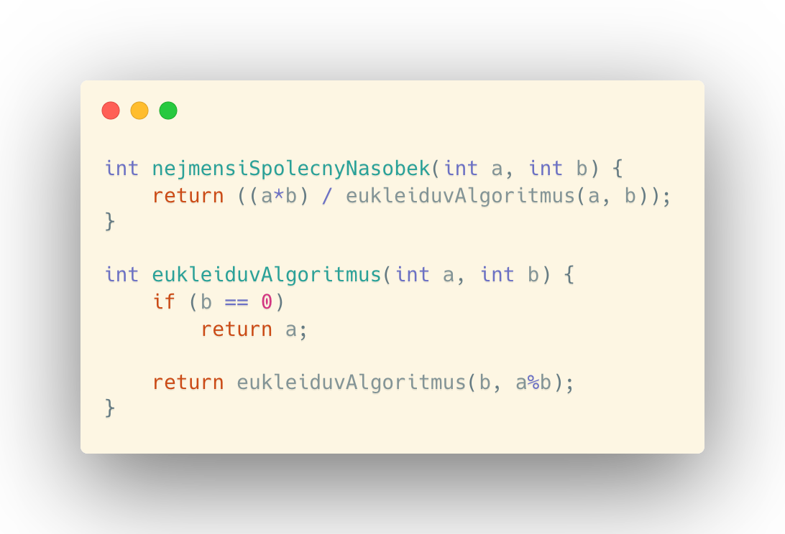

Tento algoritmus pochází původně ze starověkého Řecka od tehdejšího filozofa Eukleida. Přestože tento algoritmus uvedl ve svém díle Základy, není dodnes zcela jasné, kdo tento algoritmus vynalezl. Zajímavý je tím, že je zřejmě nejstarším netriviálním algoritmem v historii lidstva.
Algoritmus je určený pro nalezení největšího společného dělitele (NSD) dvou přirozených čísel. Dále se dá také využít pro nalezení nejmenšího společného násobku (nsn) dvou přirozených čísel.
NEJVĚTŠÍ SPOLEČNÝ DĚLITEL (NSD)
Jako první si ukážeme jak lze řešit první z těchto problémů, tedy NSD. Napíšeme tak program, jež bude procházet čísla od největšího z dvou zadaných čísel, dokud nebudou obě dělitelná bezezbytku. Pak toto číslo vrátí. Např. když budou zadána čísla 20 a 5 program vrátí číslo 5, což je největším společným dělitelem obou čísel.
Jak to již v programování bývá toto je sice funkční a správné řešení, přesto dost neefektivní. Stejný problém totiž může vyřešit dosti lépe právě za využití Eukleidova algoritmu, a proto si ho nyní ukážeme:
Můžeme si všimnout, že algoritmus pracuje s původními čísli a na konci programu nejsou tato čísla zachována. Algoritmus funguje tak, že dokud se původní proměnné nerovnají, odčítá menší hodnotu od větší. Jeho práci si můžeme představit následovně:
- Na vstupu máme dvě čísla - 120 a 75
- V prvním cyklu je jasné, že se čísla nerovnají a tak vstupuje program do smyčky. Tedy vezme větší číslo (120) a od něj odečte menší (75). Na konci prvního cyklu tak zbydou čísla 45 a 75.
- V druhém cyklu je provedena totožná operace. Zbydou tak čísla 45 a 30.
- Dále pokračuje program také stejně. Zbydou čísla 15 a 30.
- Poté zbydou čísla 15 a 15.
- Program zjistil, že čísla jsou stejná a tak vrátí NSD čísel 120 a 75, tedy číslo 15.
Algoritmus výše je originální algoritmus tak, jak byl v Řecku popsán a využíván. V programování je však pro některá čísla také málo efektivní, a proto se využívá jeho obdoná implementace pomocí operátoru modulo.
Když totiž máme například čísla 1000 a 3, pak algoritmus stále dokola odčítá 3 od 1000, dokud nezjistí, že jejich NSD je číslo 1. Proto se využívá algoritmus fungující právě na bázi zbytku po dělení, který si ukážeme v zápětí.
Jakožto nejelegantnější řešení nalezení NSD je pomocí modula a rekurze zároveň. Následující algoritmus je principem stejný jako předchozí, ale je o mnoho kratší a nevyužívá pomocnou proměnnou c.
Nyní si ukážeme jak takovýto algoritmus funguje:
- Na vstupu jsou čísla 1000 a 3
- V prvním cyklu podmínka neplatí a tak se zavolá totožná metoda s upravenými vstupními hodnotami, jimiž jsou čísla 3 a 1
- V dalším cyklu také podmínka neplatí a tak se znovu metoda zavolá tentokrát s čísly 1 a 0
- Protože podmínka tentokrát platí vrátí se číslo 1 jakožto NSD čísel 1000 a 3.
Výlesledek jsme oproti originálnímu Eukleidovu algoritmu s odčítáním čísel získali za pouhé tři cykly programu. To je velké ušetření a přitom lze takový kód napsat na 2 řádky. (v ukázce kódu je napsána podmínka na tři řádky pro přehlednost, ale lze její zápis zkrátit pouze na jeden řádek)
NEJMENŠÍ SPOLEČNÝ NÁSOBEK (nsn)
Nejmenší společný násobek nalezneme relativně triviálním způsobem a to tak, že vstupní čísla mezi sebou vynásobíme a poté vydělíme jejich největším společným dělitelem.
Algoritmus nsn tak může vypadat například takto:
